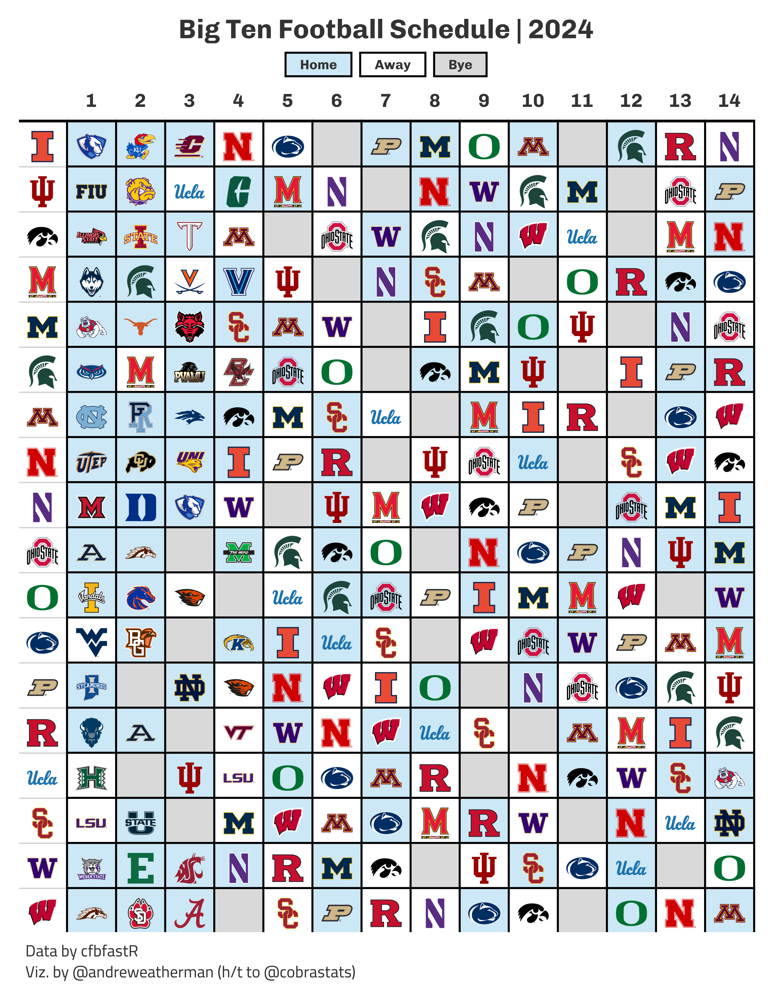

Big Ten Football Schedule
gt
tutorial
college football
Creating non-traditional tables in
gt
The What
In late April, @cobrastats posted a great graphic on the 2024 Big Ten football schedule. He open-sourced his code on GitHub, and with his permission, I created a pull request to show my attempt at creating the same graphic. You can find that code, with brief explanation, on the repository linked above, but I’m going to use this space to expand a bit more.
What we will be creating
The How
For this table, we will need:
The Data
Most of this is pretty straightforward. With schedule, we pull the 2024 college football schedule, filter for games that have occured (NY6), select the relevant variables, and then convert the date column.
With weeks, we pull the week numbers associated with each range of dates in the 2024 season – since not all games in a given week are played on the same day.
Finally, we use the overlap join functionality in the dplyr::X_join family to match our game dates to week numbers between the start_date and end_date range in weeks.
Tip
We don’t actually need to grab weeks (or join our data) because we could just infer the week numbers from game dates (ascending order) – but I did so for clarity and practice.
schedule <- espn_cfb_schedule(year = 2024, limit = 1000) %>%
filter(is.na(home_record)) %>% # remove games that have occured
select(home_team = home_team_location, away_team = away_team_location, date = game_date) %>%
mutate(date = as.Date(date, format = "%Y-%m-%dT%H:%MZ"))
weeks <- espn_cfb_calendar(year = 2024) %>%
select(week, start_date, end_date) %>%
mutate(across(-week, ~as.Date(.x, format = "%Y-%m-%dT%H:%MZ")))
schedule <- left_join(
schedule,
weeks,
join_by(between(date, start_date, end_date))
)Now, let’s create a vector of Big Ten teams and filter down.
Pivoting data with help from nflreadr
Right now, our data looks like this. For plotting, however, we want 18 rows (number of Big Ten teams) and 15 columns (one for Big Ten teams and 14 others for week). There are a few ways to approach this problem, and the easiest is to simply “pivot” our data wider.
| home_team | away_team | date | week | start_date | end_date |
|---|---|---|---|---|---|
| Minnesota | North Carolina | 2024-08-29 | 1 | 2024-08-24 | 2024-09-03 |
| Illinois | Eastern Illinois | 2024-08-29 | 1 | 2024-08-24 | 2024-09-03 |
| Indiana | Florida International | 2024-08-31 | 1 | 2024-08-24 | 2024-09-03 |
| Iowa | Illinois State | 2024-08-31 | 1 | 2024-08-24 | 2024-09-03 |
| Maryland | UConn | 2024-08-31 | 1 | 2024-08-24 | 2024-09-03 |
| Michigan | Fresno State | 2024-08-31 | 1 | 2024-08-24 | 2024-09-03 |
With pivoting, though, we’re going to run in a small problem: Our Big Ten team might be home or away. The two columns with team information are organized by location and not conference. We can fix this by first pivoting our data to a long format, using pivot_longer, and then filter the resulting value column for Big Ten teams.
For this case, pivot_longer works, but other times, you might have more statistics and want a more streamlined solution. I want to show off a nice utility function from nflreadr that will pivot data and convert your pipeline to something more standardized: nflreadr::clean_homeaway. It converts home_ and away_ prefixed columns to team_ and opponent_ while doubling the rows (one row per team, not per game).
Tip
If you relabel home_team and away_team to home and away, then schedule %>% pivot_longer(home:away) would accomplish the exact same thing. I wanted to take this opportunity to introduce this function.
schedule %>%
select(home_team, away_team, week) %>%
clean_homeaway()| team | opponent | date | week | start_date | end_date | location |
|---|---|---|---|---|---|---|
| Minnesota | North Carolina | 2024-08-29 | 1 | 2024-08-24 | 2024-09-03 | home |
| North Carolina | Minnesota | 2024-08-29 | 1 | 2024-08-24 | 2024-09-03 | away |
| Illinois | Eastern Illinois | 2024-08-29 | 1 | 2024-08-24 | 2024-09-03 | home |
| Eastern Illinois | Illinois | 2024-08-29 | 1 | 2024-08-24 | 2024-09-03 | away |
| Indiana | Florida International | 2024-08-31 | 1 | 2024-08-24 | 2024-09-03 | home |
| Florida International | Indiana | 2024-08-31 | 1 | 2024-08-24 | 2024-09-03 | away |
| Iowa | Illinois State | 2024-08-31 | 1 | 2024-08-24 | 2024-09-03 | home |
| Illinois State | Iowa | 2024-08-31 | 1 | 2024-08-24 | 2024-09-03 | away |
| Maryland | UConn | 2024-08-31 | 1 | 2024-08-24 | 2024-09-03 | home |
| UConn | Maryland | 2024-08-31 | 1 | 2024-08-24 | 2024-09-03 | away |
| Michigan | Fresno State | 2024-08-31 | 1 | 2024-08-24 | 2024-09-03 | home |
| Fresno State | Michigan | 2024-08-31 | 1 | 2024-08-24 | 2024-09-03 | away |
After which, we can filter down to Big Ten teams.
Adding logos
Before we can pivot our data, we need to add team logos and find a way to preserve our location data during the pivot without creating new columns. A nifty idea is to transition our opponent column to an HTML string with an <img> tag that includes the link to the team logo and uses the alt caption to encode location data. In a static table, the alt tag serves no purpose, so we can use glue to toss in the game location.
First, let’s grab team logos. Importantly, these team names are coming from ESPN, so let’s select those values to ensure an effortless join. We are going to use pull and set_names to create a named vector with team names and logo links.
Remember that named vectors work like so, object_name[value], so to grab logo links for our opponent column, we can do: logos[opponent]. Our location data is stored inside of the alt tag shown below.
Now that we have converted our opponent column, we can safely pivot our data wider by selecting team as the identifier column, grabbing our column names from the week variable, and setting our values as the opponent column.
Finally, we will arrange our data in alphabetical order by team and then convert our team column to the proper logo link using the named vector.
Plotting
Conditional Highlighting
In our table, we are going to highlight on two conditions: a) game location (home games are blue; away games are white) and b) bye weeks (gray).
But the problem is that conditional highlighting in gt is a bit weird because tab_style + cell_fill does not really work as one might expect. Namely, row and column vectors aren’t treated as separate pairs. If you pass through, e.g. rows = c(1, 2) and columns = c(5, 6) inside tab_style, you’ll fill four cells, not two, because tab_style doesn’t treat things as unique pairs.
Turns out, you can just build the CSS string for highlighting cells outside of the table and apply it directly with opt_css. The basic idea is this: We take a matrix of row-column indices, a table ID, and a color – and then inject those into a basic CSS string that targets cells and colors their background.
We are using which and str_detect to find the row and column indices where “home” is present inside the alt tag – the same with is.na for bye games – and then apply our generate_css function.
I’m going to add one more pieces of css, and to make things cleaner in the final plot code, I’m going to define that rule here. (This just decreases the spacing in my caption.)
additional_css <- "
#table .gt_sourcenote {
line-height: 1.3;
}
"Header + Legend
I like how the original table combines the legend with the title, and I’m going to do the same. I’m going to make two changes: a) I’m not using the Big Ten logo and b) I’m going to stack the title and legend (and center it).
This is all done with custom HTML, which will further inherit certain styles from the table theme (font family, size, weight, etc.). We can tweak a bit of that with in-line CSS.
html_content <- '
<div style="text-align: center;">
<h1 style="margin: 0; font-size: 20px;">Big Ten Football Schedule | 2024</h1>
<div style="display: flex; justify-content: center; align-items: center; margin-top: 5px;">
<div style="border: 1.5px solid black; padding: 2px 10px; text-align: center; background-color: #cce7f5; font-size: 10px; margin-right: 5px;">Home</div>
<div style="border: 1.5px solid black; padding: 2px 10px; text-align: center; font-size: 10px; margin-right: 5px;">Away</div>
<div style="border: 1.5px solid black; padding: 2px 10px; text-align: center; background-color: #d9d9d9; font-size: 10px;">Bye</div>
</div>
</div>
'Building the table
The body of our table is pretty straightforward. fmt_image renders in our logo link for the team column, while fmt_markdown does the same thing for weeks 1:14. sub_missing is a great utility function to replace text in NA columns. We can use gt_add_divider to create more pronounced divisions between rows and weeks (I prefer this look over the original).
Tip
Since we built an HTML string for our opponent columns, to preserve the game location data, we need to use fmt_markdown, not fmt_image.
plot_data %>%
gt(id = 'table') %>%
gt_theme_538() %>%
fmt_image(team, height = 25) %>%
fmt_markdown(-team) %>%
# use sub_missing to replace na with empty text string
sub_missing(-team, missing_text = '') %>%
cols_align(columns = everything(), 'center') %>%
cols_label(team = '') %>%
# bold col. headers
tab_style(locations = cells_column_labels(), style = cell_text(weight = 'bold')) %>%
# add dividers
gt_add_divider(columns = -team, sides = 'all', include_labels = FALSE, color = 'black', weight = px(1.5)) %>%
tab_header(html(html_content)) %>%
tab_source_note(md("Data by cfbfastR<br>Viz. by @andreweatherman (h/t to @cobrastats)")) %>%
tab_options(data_row.padding = 1) %>%
# apply above css
opt_css(c(home_css, bye_css, additional_css)) %>%
gtsave_extra("schedule.png", zoom = 5)